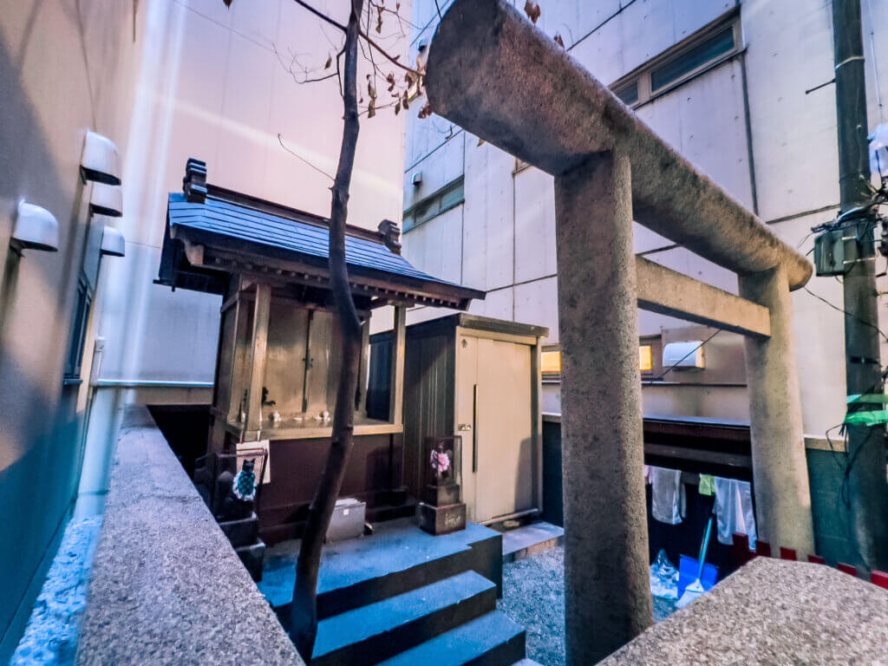
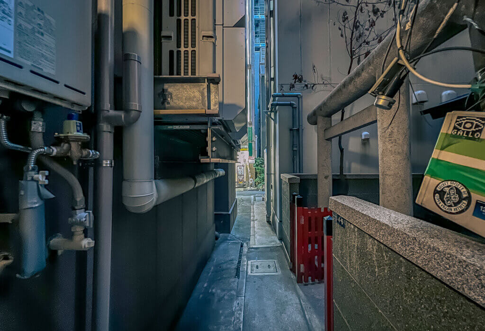
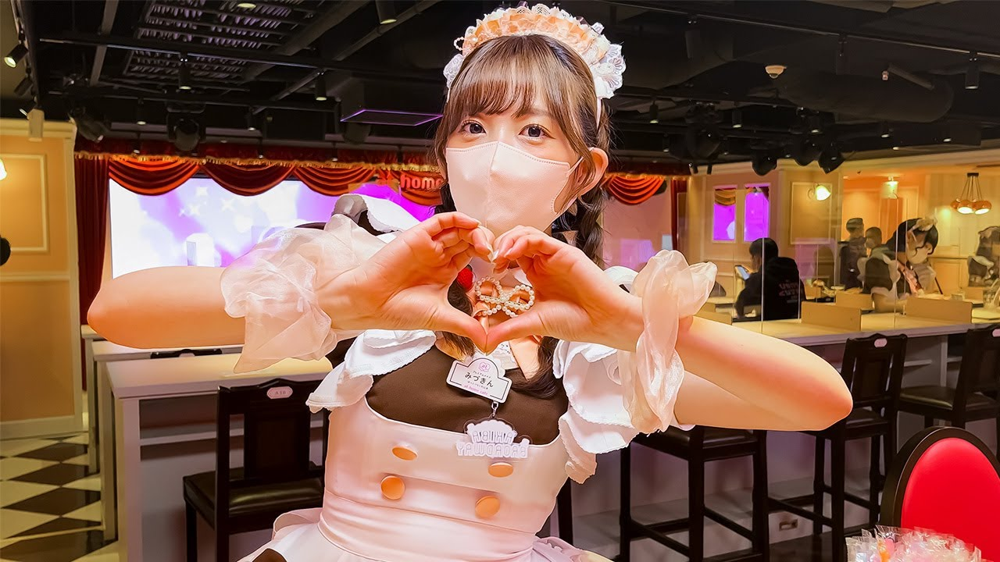
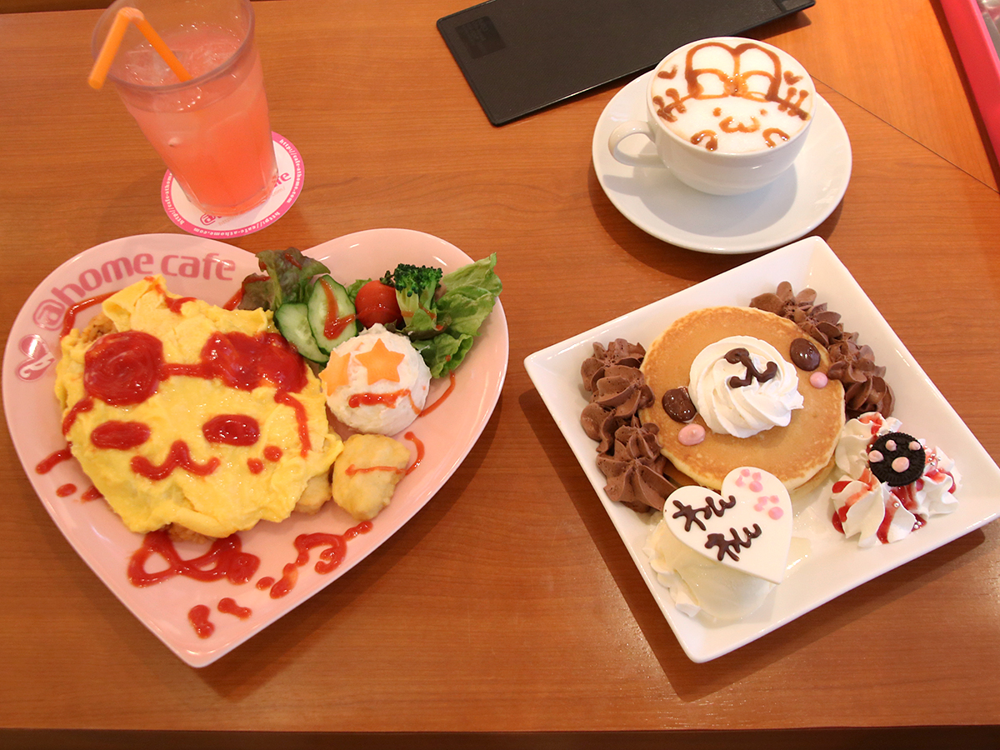
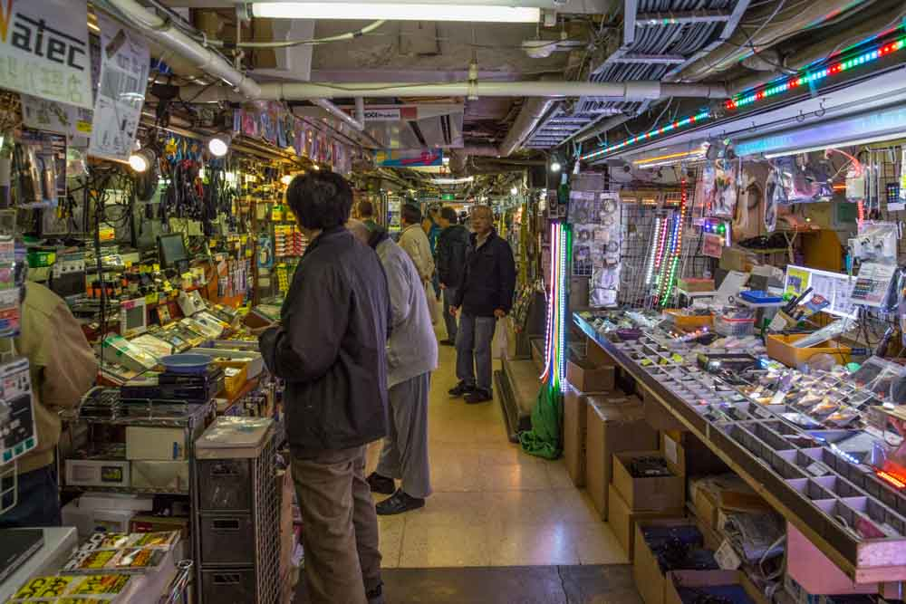
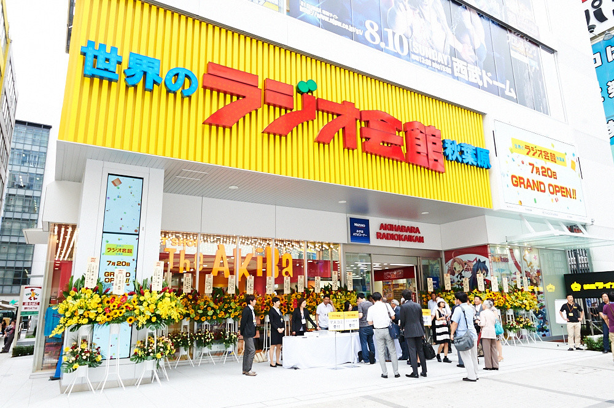
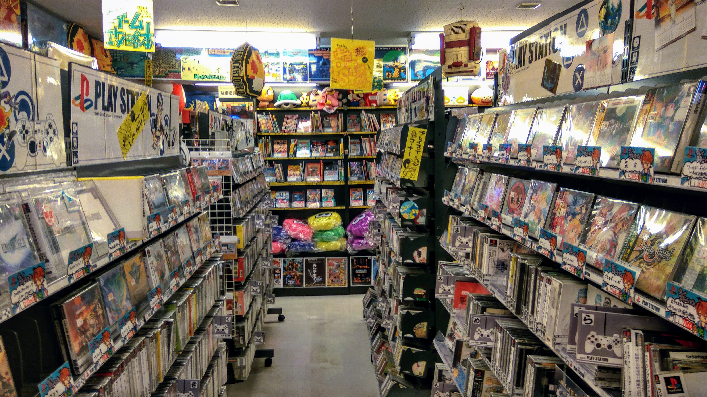
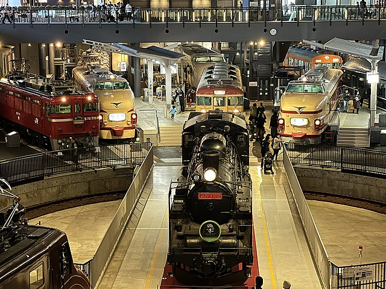
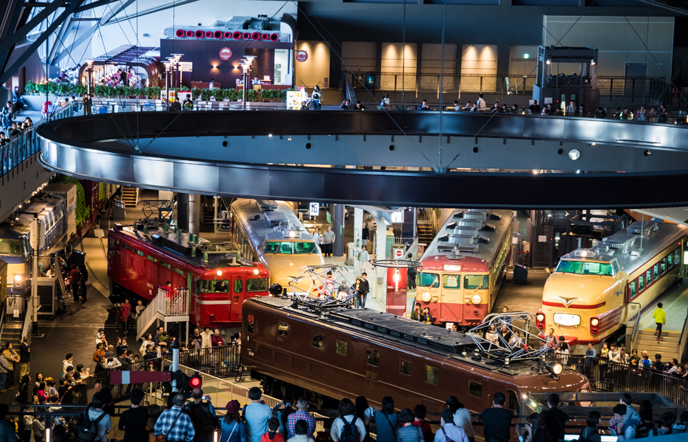
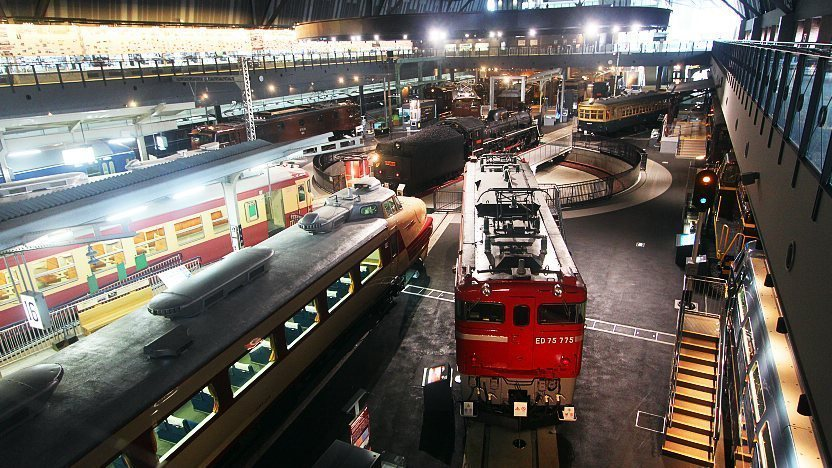

Pontos Turísticos
Estes são apenas alguns dos pontos turísticos mais famosos em Akihabara, um bairro que mistura o melhor da tecnologia moderna com a cultura pop e a nostalgia, proporcionando uma experiência única para os visitantes.
- O santuário oculto
- Home Cafe
- Radio Kaikan
- Super Potato
- O Museu Ferroviário
Tóquio é uma cidade de muitos segredos, desde bares escondidos no topo de edifícios até um tanque de água do tamanho de uma cidade construído sob a cidade para mitigar os efeitos das inundações. Você pode caminhar por qualquer número de becos escondidos atrás dos arranha-céus e com certeza encontrará uma joia escondida. Esta é a história de um dos santuários menos visitados no coração de Akihabara - o Santuário Hanabusa Inari. Antes de Tóquio se tornar, bem, Tóquio, ela era conhecida como Edo até a Restauração Meiji em 1868. Edo foi nomeado quando o xogunato Tokugawa assumiu o poder no Japão e mudou a capital administrativa do Japão de Kyoto para Edo em 1603. Diz-se que era foi durante o Período Edo – que também terminou em 1868 – que o Santuário Hanabusa Inari foi construído em Kanda, embora não em sua forma atual.
Apesar do fluxo do tempo e da constante renovação de tudo em Tóquio, alguém poderia pensar que um pequeno santuário como o Santuário Hanabusa Inari teria se perdido ao longo dos anos, mas ainda está de pé depois de Deus sabe quanto tempo.
Há algo de mágico, quase ao estilo Ghibli, em apenas vagar por um beco discreto em uma das áreas mais high-tech do mundo e encontrar um pedaço bem conservado da história japonesa.
Sim, você tem o grande Santuário Kanda, assim como muitos outros espalhados por Tóquio, mas todos foram modernizados de uma forma ou de outra - seja por meio de um playground, sistemas de iluminação ou qualquer outra conveniência do século XXI. O Santuário Hanabusa Inari é diferente; sua elegância e beleza vêm de sua simplicidade. A coisa mais moderna do santuário é a placa de endereço e um poste elétrico que foi erguido logo dentro do terreno – tem que achar um lugar para colocar essas coisas!
O Santuário Hanabusa Inari é dedicado a Uda no Omachi, uma divindade da comida. Enquanto na época em que foi originalmente construída, a área provavelmente era usada por fazendeiros no pântano que era Edo, avançando para agora e os cientistas loucos de Akihabara raramente precisam rezar por comida - já que uma loja de conveniência está a poucos passos longe–, a menos que houvesse um restaurante bem na frente do santuário…
A cultura pop empregada é uma das subculturas representativas do Japão e também ganhou muita popularidade em todo o mundo nos últimos anos! Maid cafés são onde você pode encontrar empregadas adoravelmente vestidas, apresentações ao vivo chiques e comida fantástica. Essas lojas atraem até mesmo senhoras que têm um interesse passageiro em coisas fofas! A característica mais original do café é o seu interior espaçoso e relaxante. Como o café emprega muitas empregadas, você certamente encontrará uma com uma personalidade que fale com você! Você também pode tirar fotos comemorativas com as empregadas aqui ou jogar jogos competitivos com elas Ao entrar na loja, uma arrumadeira irá recebê-lo como se você tivesse acabado de voltar para casa. Enquanto você caminha pela loja, a empregada toca uma campainha e um coro de "Bem-vindo de volta, mestre, senhora!" soará de todas as empregadas que ouvirem o toque.
A hora da refeição é de uma hora para todos os hóspedes. A taxa básica para uso do restaurante seria a taxa de entrada e qualquer item do menu solicitado, e isso começa em apenas 1.400 ienes (imposto incluído).
Há também pacotes que vêm com sessões de fotos ou uma oportunidade de jogar com as empregadas. Alguns pacotes também podem incluir comida ou sobremesa.
Para iniciantes que não sabem qual atividade tentar, considere pegar um de seus pacotes apenas para simplificar. Isso liberará sua atenção para mais tempo com as empregadas borbulhantes esperando por você!
A Radio Kaikan é um edifício icônico e uma atração turística popular localizada no coração de Akihabara, Tóquio. Ela é amplamente conhecida como um centro comercial dedicado à cultura otaku, oferecendo uma variedade de lojas que vendem produtos relacionados a anime, mangá, jogos e colecionáveis. Aqui estão alguns detalhes adicionais sobre a Radio Kaikan:
História: O edifício Radio Kaikan foi inaugurado em 1956 e, ao longo dos anos, tornou-se um marco importante em Akihabara. Originalmente, o edifício era um centro de radiodifusão e eletrônicos, mas ao longo do tempo, ele se transformou em um destino para os entusiastas da cultura pop japonesa.
Lojas Temáticas: A Radio Kaikan abriga várias lojas temáticas que atendem a diferentes aspectos da cultura otaku. Você encontrará lojas de figuras de anime, mercadorias de personagens populares, mangás raros, jogos de vídeo e muito mais. É um lugar onde os colecionadores podem encontrar itens exclusivos.

Eventos Especiais: O edifício também hospeda eventos especiais ao longo do ano, como sessões de autógrafos com artistas de mangá, lançamentos de produtos e exposições de anime. Esses eventos atraem fãs e visitantes de todo o mundo.
Cafés Temáticos: Além das lojas, a Radio Kaikan também abriga cafés temáticos, como cafés de personagens de anime, onde os visitantes podem desfrutar de refeições e bebidas relacionadas à cultura pop japonesa em um ambiente divertido.
Renovações e Expansões: Ao longo dos anos, o edifício passou por várias renovações e expansões para acomodar a crescente demanda por produtos relacionados à cultura otaku. Isso o mantém como um destino atualizado e relevante para os entusiastas.
A Radio Kaikan é um local imperdível para qualquer pessoa interessada na cultura pop japonesa, oferecendo uma experiência única de compras e imersão na atmosfera vibrante de Akihabara. Se você é fã de anime, mangá ou jogos de vídeo, provavelmente encontrará algo especial aqui para levar para casa como lembrança.
A Super Potato é uma loja de videogames retrô extremamente popular e renomada localizada em Akihabara, Tóquio. Ela é um destino de sonho para os entusiastas de jogos de vídeo e colecionadores de todo o mundo. Aqui estão mais detalhes sobre a Super Potato:
História: A Super Potato foi fundada em 1993 e se tornou uma das lojas de videogames retrô mais conhecidas do Japão. Ela é uma das pioneiras na venda de jogos e consoles antigos, tornando-se uma referência para os aficionados por videogames retrô.
Variedade de Produtos: A loja oferece uma ampla variedade de produtos relacionados a videogames retrô, incluindo consoles antigos como o Nintendo Entertainment System (NES), o Super Nintendo (SNES), o Sega Genesis e muitos outros. Você também encontrará uma vasta seleção de jogos, acessórios e até mesmo brinquedos colecionáveis relacionados a videogames.
Nostalgia: A Super Potato é conhecida por evocar uma sensação de nostalgia para os visitantes, permitindo que eles revivam as experiências de jogos de suas infâncias. É um lugar onde você pode encontrar jogos e sistemas que talvez não tenha visto em anos.
Lojas Múltiplas: Além da loja principal em Akihabara, a Super Potato também tem várias filiais em Tóquio e em outras cidades do Japão. Cada uma delas oferece uma ampla seleção de produtos, mas a loja original em Akihabara é a mais famosa e frequentemente a mais visitada.
Área de Arcade: Algumas das lojas Super Potato também incluem uma área de arcade retrô, onde você pode jogar jogos clássicos por uma pequena taxa. Isso torna a experiência ainda mais imersiva para os fãs de videogames.
A Super Potato é um local obrigatório para qualquer pessoa interessada na história dos videogames e na cultura dos jogos retrô. Se você estiver em Akihabara e tiver interesse em jogos e consoles antigos, esta loja é um verdadeiro paraíso que oferece a oportunidade de encontrar tesouros raros e reviver a magia dos jogos de vídeo do passado.
O Museu Ferroviário de Tóquio, também conhecido como "Tetsudo Hakubutsukan," é uma atração notável localizada em Akihabara, Tóquio. Este museu oferece uma visão fascinante da história ferroviária do Japão e é uma visita obrigatória para os entusiastas de trens e para quem deseja aprender mais sobre a evolução do sistema ferroviário japonês. Aqui estão mais detalhes sobre o Museu Ferroviário de Tóquio:
História: O museu foi inaugurado em 2007 e está localizado na antiga estação ferroviária de Omiya, que foi desativada. A estação em si é uma atração histórica e foi preservada como parte do museu.
Exibições Interativas: O museu apresenta uma série de exposições interativas que abrangem desde a história dos trens no Japão até os desenvolvimentos tecnológicos mais recentes na indústria ferroviária. Os visitantes podem explorar locomotivas a vapor, vagões de trem, modelos em escala, e muito mais.
Simuladores de Trem: Uma das atrações mais populares é a oportunidade de experimentar a sensação de ser maquinista de trem através de simuladores de trem. Os visitantes podem assumir o controle de uma locomotiva e aprender como é dirigir um trem de verdade.
Exibições Temáticas: O museu frequentemente realiza exposições temáticas especiais que destacam aspectos específicos da história ferroviária japonesa, como a era dos trens a vapor ou a evolução dos trens de alta velocidade.
Loja de Presentes: Há uma loja de presentes onde os visitantes podem adquirir lembranças relacionadas a trens, como miniaturas, camisetas e livros.
Restaurante com Tema Ferroviário: O museu também tem um restaurante com tema ferroviário onde os visitantes podem desfrutar de refeições enquanto observam trens passando pelas pistas.
Eventos Especiais: O Museu Ferroviário de Tóquio realiza eventos especiais ao longo do ano, como passeios de trens históricos e festivais ferroviários, que atraem fãs de todas as idades.
O Museu Ferroviário de Tóquio é uma experiência educativa e divertida para toda a família, oferecendo a oportunidade de explorar a rica herança ferroviária do Japão de maneira envolvente. Se você estiver em Akihabara e tiver interesse em trens, tecnologia ferroviária ou história, este museu certamente vale a visita.